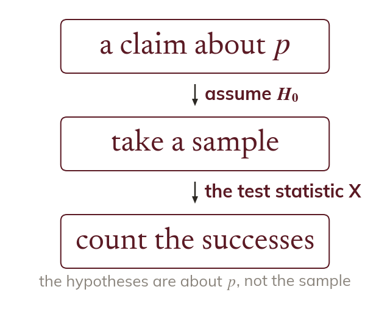
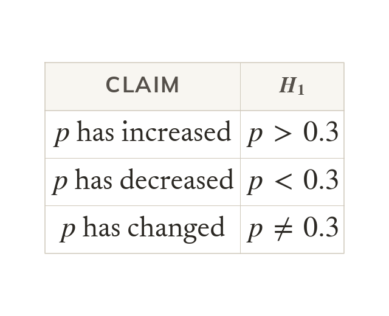
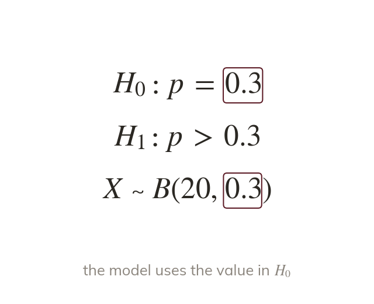
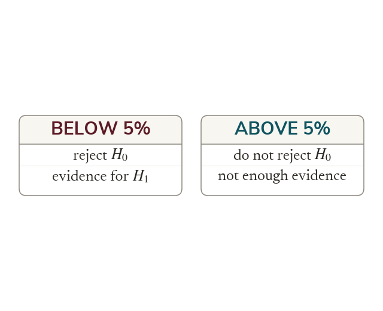
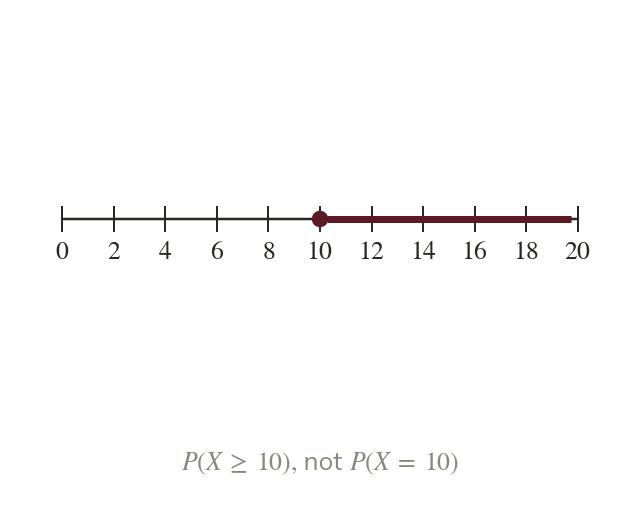
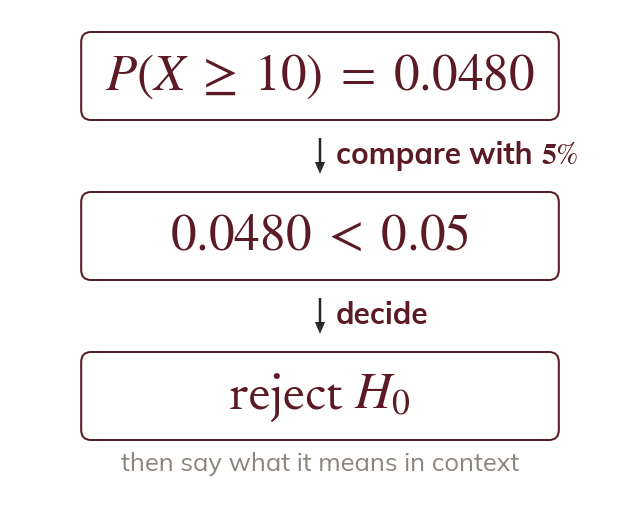

Testing a claim
A hypothesis test uses a sample to test a claim about a population probability The null hypothesis gives the value of that is assumed to be true.
A sample can suggest that a probability has changed, but a hypothesis test says whether the evidence is strong enough. The hypotheses and the decision rule set up here are used in every test in this chapter, starting with critical regions next lesson.
Work down the page at your own pace. Write every answer in your book first, then click to check it.
Read each card, then follow the worked examples one step at a time.

A hypothesis test uses a sample to test a claim about a population probability The null hypothesis gives the value of that is assumed to be true.

The alternative hypothesis says how p may have changed. An increase or a decrease gives a one-tailed test, and any change gives a two-tailed test.

The test statistic X is the number of successes in the sample. Assuming is true, X ~ with the value of from
Pick an answer. If it's wrong, the feedback tells you which mistake it was.
Write the blanks in your book first, then tap each one to check.
Read each card, then follow the worked examples one step at a time.

The significance level, such as sets how unlikely a result must be before is rejected. A result less likely than this, assuming is significant.

Find the probability of the observed value or a more extreme one, assuming
For : and successes, find

Compare the probability with the significance level, then say what it means in context. Never say that is proved, or that is accepted.
Pick an answer. If it's wrong, the feedback tells you which mistake it was.
Write the blanks in your book first, then tap each one to check.
Finished? Next lesson: 12.S7.3 One-Tailed Tests.
For each skill, tap the one that is true for you today. Your Revise pages start with anything you mark Not yet.
Your ratings are saved on this device only.
Log in, then search for a code to practise that skill.